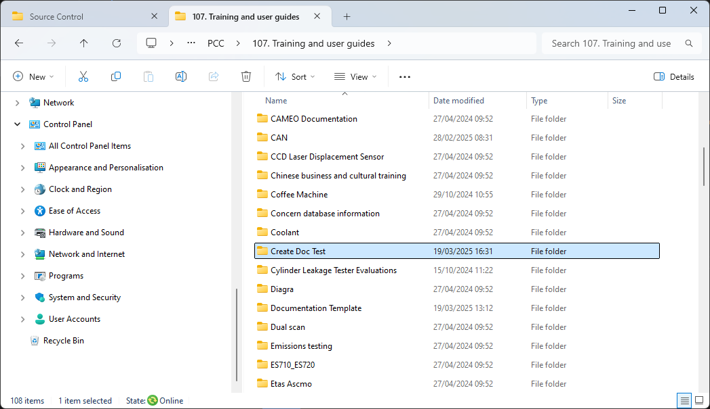
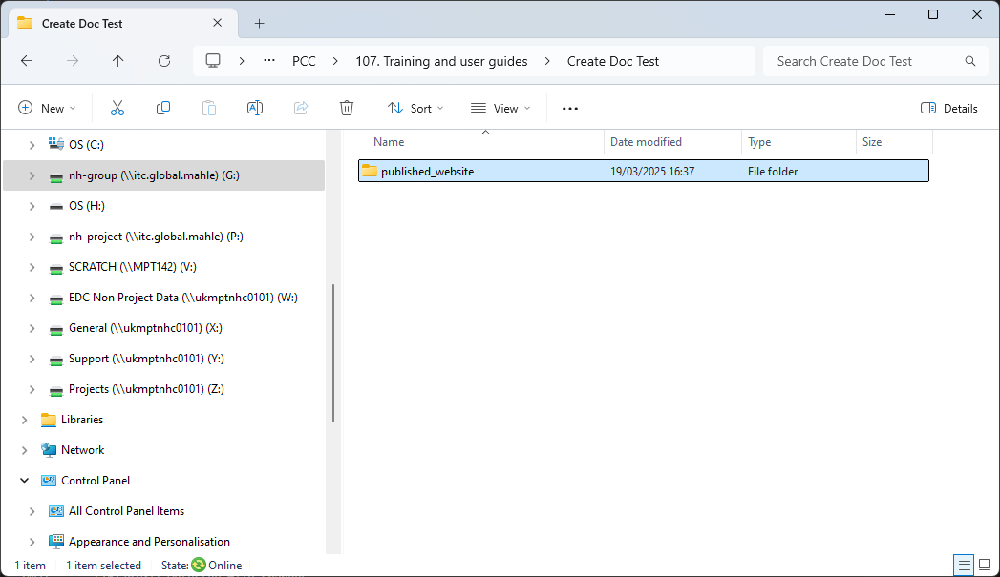
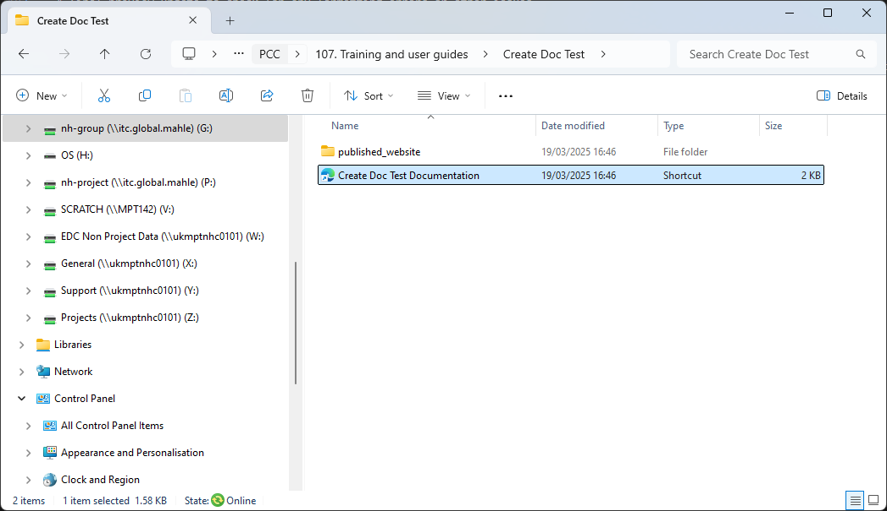
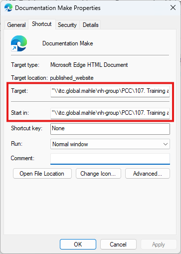

Publish🔗
MkDocs outputs a website that can be viewed from any web-browser.
Pre-build check🔗
Check the DOS window launch_site_preview.bat (mkdocs serve command). This will report errors (often broken links) after every save of any docs. Fix these before continuing.
Build Site🔗
Once happy with the site preview, run rebuild_site.bat which builds the site in published form and stores it in the directory published_website. Simply double-click the bat-file from any directory explorer window.
published_website location
This directory is set using the site_dir parameter in mkdocs.yml
Site build errors
Broken links and site build errors will be reported in the dos window launch_site_preview.bat (mkdocs serve command). In the unlikely event that there are additional build errors reported at build stage, you'll need to show these before the dos window closes. Edit rebuild_site.bat and add pause as a final line in the batch file.
The next step depends if the documentation project is:
Existing🔗
The published documentation site should already have an existing directory on our server, run copy_published_site_to_server.bat to copy the new contents of the site to the server location (if this fails check the Copy file is correct).
Tip
If you wish to change/view the location of the published site, please refer to the instructions on New documentation.
The documentation site is now published.
Attention
Ensure to commit and push all changes made to the documentation repository.
New🔗
Directory🔗
The suggested storage location for C&C documentation is:
Create a new directory appropriately named for the documentation:

Copy the entire of published_website to this new directory:

Shortcut🔗
Create a shortcut to published_website/index.html alongside the pushlished_website directory. Rename the shortcut to Directory Name + "Documentation".

Select the shortcut, click the mouse Right Button and open the Properties window.
To make the link more robust, Edit the paths for both Target and Start in, by replacing G: (or similar) with:

Share the link with users - anyone can view the documentation from a browser.
Copy🔗
For quick and easy future updating of the published documentation site, copy_published_site_to_server.bat must be edited in the orginal documentation repository. Replace NewDirectory with the name of the directory where the new documentation site is published (e.g. Create Doc Test).
| copy_published_site_to_server.bat | |
|---|---|
The documentation site is now finished and published.
Attention
Ensure to commit and push all changes made to the documentation repository.